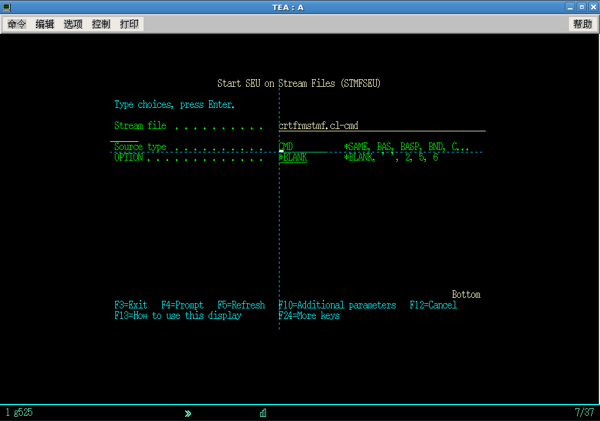

The default value of parameter SRCTYPE of STMFSEU is *SAME. When *SAME is specified, STMFSEU use the extension file name of the target stream file as the value of parameter SRCTYPE. If the extension file name of your target source stream file is
NOT what you want to pass to SEU, you may specify the SRCTYPE parameter explicitly. In the following example the source stream file name of CL command CRTFRMSTMF is crtfrmstmf.cl-cmd, to utilize the command prompting function of SEU one should set the SRCTYPE parameter to
CMD explicitly.

 1.5.9
1.5.9